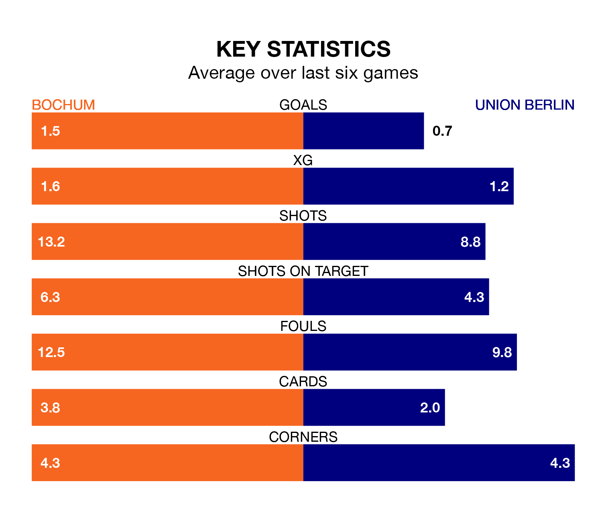

Struggling Union Berlin face Bochum away at Vonovia Ruhrstadion on Saturday looking to build on a win in their last league outing.
After securing all three points with a 3-1 victory over Borussia M'gladbach on December 9, Union Berlin sit 15th in the Bundesliga.
They travel to play a Bochum side 14th in the standings, who lost in their last match, 3-1 against Hoffenheim, on December 8.
In the last 10 years, Bochum and Union Berlin have played each other on 14 occasions. Bochum won three of them, Union Berlin seven, and they drew four times.
On average, Bochum scored 1.1 goals and Union Berlin 1.6 in those matches.
Their last meeting was on April 16, when they played out a 1-1 draw.
Bochum are in mixed form in the Bundesliga, with two wins and three draws from their last six games.
With a win and a draw over that period, Union Berlin's form is worse – they have taken four points from 18, compared to the home side's nine.
With 15 goals in 14 games so far this season, Bochum are scoring at below the league average rate with 1.1 goals per game. And they are conceding more than average, letting in 29 goals at a rate of 2.1 per game.
The visitors are also below average scorers, with 1.2 goals per game, compared to a league average of 1.7. They have conceded 2.2 goals per game.
